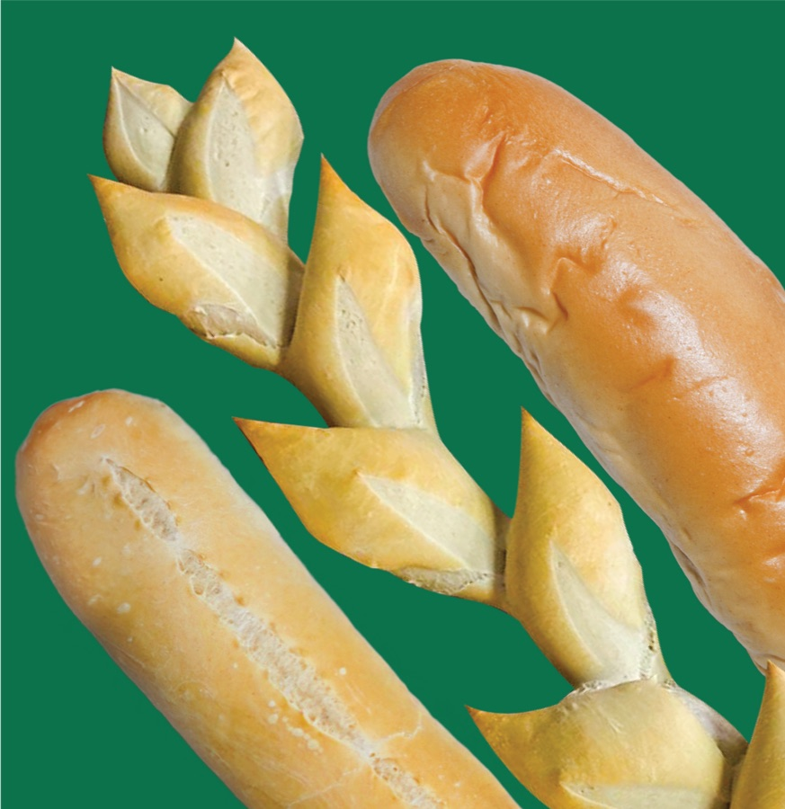
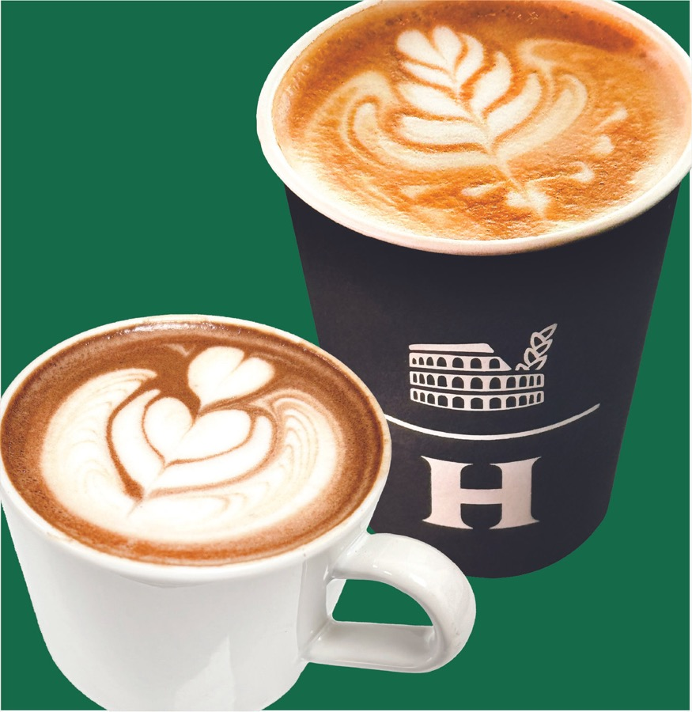

nº 01Cupey
Cupey Professional Mall
Ordena aquí
nº 02Apolo · Guaynabo
Centro Comercial Apolo
Ordena aquí nº 03
nº 03
Los Filtros · Bayamón
Centro Comercial Los Filtros
Ordena aquí
nº 01Cupey Professional Mall
Ordena aquí
nº 02Centro Comercial Apolo
Ordena aquí
nº 03
Centro Comercial Los Filtros
Ordena aquíMcQueenyGroup reúne las tres panaderías HORNOFINO del área metro. El mismo horno de siempre, el mismo pan caliente, la misma bienvenida.
Elige tu panadería arriba, ordena desde el menú y recoge en la tienda. Y con Horno Rewards, cada visita cuenta — en cualquiera de las tres.
Ordena en cualquiera de nuestras panaderías y acumula sellos. Al llenar tu tarjeta, canjea un café o quesito gratis — en la tienda que tú quieras.
Conoce el programa